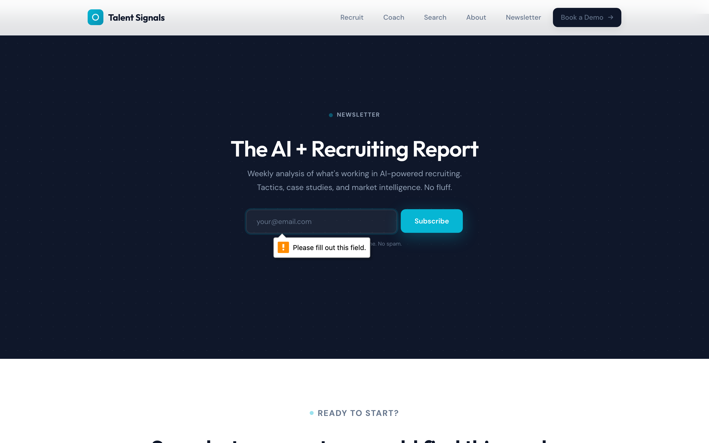

Talent Signals
Human experience audit of talentsignals.co marketing site (updated)
00 Executive Summary
The Talent Signals site has resolved its two blockers from the previous audit. The Calendly 404 is replaced with a mailto: CTA. Invisible page sections now render fully. Testimonials have real quotes with titles and locations. Pricing is visible ($2,500 starting).
The site still has conversion friction: mailto: opens an email client instead of a scheduling tool (adds a step), the newsletter uses a mailto: fallback instead of a real backend, and testimonials remain anonymous (roles but no names). The live signal feed cycling animation is a strong new addition that makes the hero feel alive.
Previous: "Looks like a $50K build and converts like a broken landing page."
Now: "Looks like a $50K build and converts like a $5K build."

Desktop hero: clear value prop, signal viz, dual CTAs, social proof
01 First Impression (50ms Test)
The desktop hero remains excellent. "Know who's hiring before the job is posted." instantly communicates value. The live signal feed visualization with real company names (Datadog, Stripe, Bolt) and numeric scores (92, 88, 76, 71) creates both credibility and intrigue. Two CTAs with clear hierarchy. Social proof reads "Used by 20+ recruiting agencies."
New since last audit: the signal feed now cycles through additional signals every 4 seconds, creating a "live intelligence" feel that's genuinely compelling.
Desktop 1440px: full hero with signal viz

Mobile 375px: signal viz still below fold
02 Cognitive Walk-Through
7-step simulated journey through the primary conversion funnel.
- Expects
- Understand what this product is
- Actually
- Immediately clear: recruiting intelligence platform. Badge reads "Recruiting Intelligence," H1 says "Know who's hiring before the job is posted." Signal feed shows live data with real company names.
- Feels
- Impressed, intrigued
- Expects
- Clear next step
- Actually
- Two CTAs: "Book a Demo" (primary dark) and "See How It Works" (outline). Demo note says "We'll run your niche live on the call. See real signals from your market in 30 minutes." Strong micro-copy.
- Feels
- Confident, ready to act
- Expects
- Calendar/scheduling page to pick a time
- Actually
- Opens email client with pre-filled mailto: (subject: "Demo Request", body with fields for Name, Company, Niche). Functional, but adds a step vs. a proper booking tool.
- Feels
- Slight friction. "I expected to pick a time, not compose an email."
- Evidence
- Every extra step in a conversion funnel loses 10-20% of users (Baymard Institute). mailto: requires configured email client, which mobile users often don't have.
- vs. v1
- Fixed Previously: Calendly 404. Now: Working path, just not optimal.
- Expects
- Learn about offerings
- Actually
- Trust strip (20+ agencies, 50+ implementations, 7 days, 3x pipeline). Then 3 product cards (Recruit, Coach, Search) with clear segmentation, features, and links to dedicated pages. All sections fully visible.
- Feels
- Engaged. Content is well-organized.
- vs. v1
- Fixed Previously: sections hidden by JS animation. Now: fully rendered.

Product cards with hover state (cyan border highlight visible on Recruit card)

Product card hover: elevated shadow + cyan top border accent
- Expects
- Real client endorsements with names and photos
- Actually
- Three testimonials with real quotes, role titles, and locations: "Managing Director, Executive Search Agency, London", "Senior Career Coach, Independent Practice, Dubai", "Recruiting Partner, Tech Staffing Agency, NYC". Avatar initials instead of photos. No real names.
- Feels
- More credible than v1, but still holding back. "Why won't they name these people?"
- vs. v1
- Improved Previously: emoji icons + generic outcome text. Now: actual quotes with roles/locations.

Testimonials: real quotes, titles, locations, but no names or photos
- Expects
- Enter email, get subscribed
- Actually
- Form uses preventDefault(), opens mailto: with subscriber's email in the body, then shows "Thanks! We'll add you to the list." The success message appears regardless of whether the email actually sends. Users who cancel the email draft still see the success checkmark.
- Feels
- Acceptable if email sends. Misleading if user cancels the email client popup.
- vs. v1
- Improved Previously: preventDefault with zero data capture. Now: mailto fallback at least creates an email draft.

Newsletter: browser validation fires on empty submit, mailto on valid email
- Expects
- Last chance to convert
- Actually
- "See what your system would find this week." with pricing: "One-time build fee. No monthly SaaS charges. Systems start at $2,500." Two CTAs: Book a Demo (mailto) and Get the Newsletter (anchor to #newsletter).
- Feels
- Clear, transparent. Pricing removes ambiguity. "I can self-qualify now."
- vs. v1
- Fixed Previously: two dead-end CTAs. Now: both paths functional, pricing visible.

Final CTA: pricing visible, both CTAs functional
03 Multi-Viewport Analysis
Desktop 1440px

Tablet 768px
Mobile 375px
Desktop (1440px)
Layout is excellent. Hero uses 2-column grid with text and signal viz side by side. Products render in 3-column grid. Sticky nav is clean with blur backdrop. Best experience.
Tablet (768px)
Layout adapts to single column. Signal viz appears below hero text but still visible on first scroll. All content readable. Hamburger menu works. No breakage.
Mobile (375px) MEDIUM
Text readable, CTAs full-width and thumb-friendly. Signal viz pushed far below fold (mobile users miss the visual hook). Nav uses hamburger correctly. Newsletter form stacks vertically. Footer links have proper 44px touch targets (min-height:44px set in CSS).

Desktop full page: all sections render

Mobile full page: all sections render
04 Emotional Arc
Trajectory: RISING WITH PLATEAU. Starts high, dips at Step 3 (mailto friction), recovers through content, plateaus at "good but not great."
The emotional journey is dramatically improved from v1 (which crashed at Step 3 and never recovered). The mailto: at Step 3 creates a dip but not a crash. Content quality through Steps 4-7 keeps the user engaged. Pricing visibility at Step 7 gives a positive close. No more "frustration valley."
05 Friction Inventory
Medium Priority
#1: "Book a Demo" opens email client instead of scheduler
mailto: links require a configured email client. Mobile users on webmail (Gmail in browser) will get a blank compose window. Users expect to pick a time slot, not draft an email. Every extra step loses 10-20% (Baymard).
#2: Newsletter form misleads on cancel
Success message "Thanks! We'll add you to the list" shows even if user cancels the mailto: dialog. No real backend captures the email. The mailto: fallback is better than nothing, but the success state is a lie when the user doesn't complete the email send.
#3: Testimonials still anonymous
Quotes are improved (real text with roles/locations) but no real names, no photos, no company names. At the critical trust section, anonymity creates doubt. "Managing Director, Executive Search Agency, London" is plausible but unverifiable.
#4: Three audiences dilute focus
Recruit, Coach, and Search products compete for attention on the same page. A recruiting director doesn't care about job seeker tools. The product cards are well-designed, but a focused landing page for each audience would convert better.
#5: Signal viz invisible on mobile
The most compelling visual element is pushed below the fold on mobile (375px). Mobile visitors see text + CTAs but miss the signal feed that makes the desktop hero so effective.
Low Priority
#6: "Backed by Ben AI" reveals parent brand
The differentiators section includes "Backed by Ben AI" with references to "Wise, Glovo, and AllClear Insurance." This may undermine Talent Signals' standalone positioning or confuse visitors about whose product this is.
#7: No meta OG tags for social sharing
Missing Open Graph and Twitter Card meta tags means shared links won't have a preview image or description on social platforms.
Resolved from v1
Calendly 404 (BLOCKER), invisible sections (BLOCKER), zero-data newsletter (HIGH), no pricing (HIGH), emoji-only testimonials (HIGH)
06 The Verdict
06.5 Dimension Scorecard
Five dimensions at 3/5 share a common root cause: the mailto: conversion path. Replace it with a proper scheduling tool and the score jumps. Navigation, Emotional Arc, Trust, and Time to Value all improve when the primary CTA leads to a frictionless booking experience instead of an email draft.
07 Priority Fix List
Ordered by impact. Fix #1 alone would move the composite from 23 to ~27.
Replace mailto: with a scheduling tool
Use Cal.com (free tier), Calendly, or SavvyCal for "Book a Demo." Users should pick a time in 2 clicks, not compose an email. This single change eliminates the biggest remaining conversion friction.
Connect a real newsletter backend
Use Buttondown (free tier, full API) or ConvertKit. Replace the mailto: fallback with a real API call. Fix the success message to only show after confirmed submission.
Add real names and photos to testimonials
Get permission from 2-3 clients to use their name, headshot, and company. Even one named testimonial with a LinkedIn link is worth more than three anonymous quotes. Add star ratings for visual trust.
Show signal viz above fold on mobile
On mobile, show a compact 2-item signal feed between the hero text and CTAs. The viz is the differentiator; mobile users shouldn't miss it.
Add OG meta tags for social sharing
Add og:title, og:description, og:image, and twitter:card meta tags. Use the desktop hero screenshot as the social preview image. When shared on LinkedIn or Slack, the link should show the signal viz.